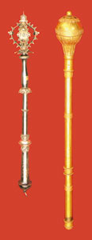
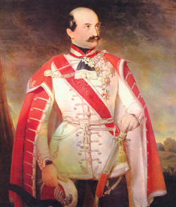

Ban ili banus naziv je za najvišeg državnog dužnosnika u Hrvatskoj i Slavoniji do 1921. te srednjovjekovnoj Bosni i srednjovjekovnim graničnim područjima Ugarske, a u Kraljevini Jugoslaviji bio je upravitelj najveće upravne jedinice. Hrvatska enciklopedija donosi priču o hrvatskim i bosanskim vladarima i kraljevima, vojnim zapovjednicima i županima, te plemstvu i povijesnim okolnostima koje su dovele do utemeljenja institucije bana.
Smatra se da naziv ban dolazi od mongolsko-turske riječi bajan: bogat, imućan. Prema danas najraširenijem mišljenju, vjerojatno je u hrvatski jezik ušla posredovanjem Avara, kod kojih je naslov označivao vojnoga zapovjednika (bajan: vladar horde). Prvi je zapis o instituciji bana u djelu Konstantina Porfirogeneta O upravljanju Carstvom iz X. st., koji piše da je ban upravitelj županija Like, Gacke i Krbave, kojima je upravljao u ime hrvatskoga kralja s naslovom ban Hrvata.
Tijekom X. st. banovi su imali važnu ulogu u političkome životu Hrvatskoga Kraljevstva. Ustanova bana postupno se pretvara u najvišega dužnosnika kraljevstva kojega postavlja kralj (ban je njegov zakoniti zastupnik; u nekim slučajevima i suvladar). U XIV. i XV. st. ban saziva i predsjedava Saborom, potvrđuje zaključke Sabora, osniva gradove i daje im povlastice, kuje novac i ubire daće, imenuje svojega zamjenika, podbana i župane te obavlja sudske poslove. Vrhovni je zapovjednik vojske Kraljevine, koju podiže insurekcijom, a izravno vodi banski banderij (1000 vojnika).

Banska žezla bana J. Šokčevića i F. Vlašića, XIX. st.
U drugoj polovici XII. st. zabilježeni su i prvi bosanski banovi (Borić, Kulin), a položaj bosanskoga bana razvit će se tijekom XIII. st. u gotovo neovisna vladara. Potkraj XII. i početkom XIII. st. na hrvatskom području počinju se pojavljivati po dva bana – jedan za Slavoniju (ban cijele Slavonije, banus tocius Sclavonie) i jedan za Hrvatsku (primorski ban, banus maritimus), a čini se da je primorski ban bio podređen banu cijele Slavonije. Potkraj XIV. i početkom XV. st. banska se vlast počinje ponovno povezivati pod naslovom hrvatsko-dalmatinsko-slavonskoga bana, a potkraj XV. st. konačno se spaja (iako su tu dužnost katkad istodobno obnašale dvije osobe).
Posebnu je važnost banska čast dobila u razdoblju ratova protiv Osmanlija, osobito u doba bana Petra Berislavića, kada banovi potpuno preuzimaju ulogu potkralja (prorex) u Hrvatskoj te vode obranu kraljevstva. Bana je postavljao kralj na prijedlog Hrvatskoga sabora. Ban nije polagao prisegu Saboru, nego u Saboru kralju. Istodobno je provodio i zaključke Sabora. Da bi odluke koje je donio ban, kao i odluke Sabora, postale pravovaljane, morao ih je potvrditi vladar. Bana je Sabor imenovao vrhovnim kapetanom Kraljevstva koji pod svojim zapovjedništvom ima banski i ostale banderije, no bio je podređen tijelima vojne uprave i zapovjedništvu izvan Kraljevine, bez utjecaja Sabora.
Nakon ukinuća staleškoga društva u Hrvatskoj 1848., prekinuta je i realna unija s Ugarskom te ban postaje izravno podređen kralju. Također, jedan od zahtjeva narodnoga pokreta bio je da ban upravlja svim hrvatskim zemljama uz odgovornu vladu te svake godine saziva sabor. Taj je cilj samo djelomice ostvaren imenovanjem bana Josipa Jelačića, koji je u svojoj osobi sjedinio dužnosti hrvatskoga bana, vrhovnoga vojnog zapovjednika Vojne granice te guvernera Rijeke i Dalmacije. Nakon Jelačićeve smrti prekinut je i takav oblik jedinstva navedenih funkcija. Hrvatsko-ugarskom nagodbom (1868) banski je položaj oslabljen.

Ban Josip Jelačić
Nakon raspada Austro-Ugarske Monarhije, Kraljevina Jugoslavija podijeljena je u šest banovina, upravnih teritorijalnih jedinica. Ban je imao najvišu političku i upravnu vlast u banovini, a postavljao se kraljevskom uredbom, na prijedlog predsjednika Ministarskog savjeta Kraljevine Jugoslavije. Na temelju Sporazuma Cvetković–Maček 1939. osnovana je Banovina Hrvatska kao oblik teritorijalne samouprave hrvatskih krajeva u Kraljevini Jugoslaviji s banom na čelu. Kralj je imenovao i razrješivao bana uredbom bez utjecaja jugoslavenske vlade. Nijedna pisana odluka kraljevske vlasti iz nadležnosti Banovine nije bila valjana, niti se mogla provesti, ako je ban nije supotpisao, a njegove odluke iz područja banske nadležnosti nije mogao mijenjati kralj, već samo sudovi.